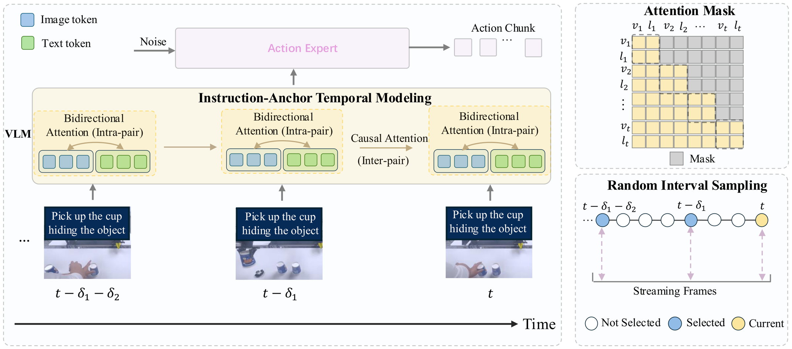

Vision-Language-Action (VLA) models have demonstrated effectiveness in robot manipulation, yet state-of-the-art models such as π0.5 operate under a single-frame paradigm, limiting their ability to retain past observations and develop precise spatial perception. In this paper, we propose StreamPI, a streaming multimodal temporal modeling framework that equips single-frame VLA with temporal reasoning capability without introducing any additional parameters. One core design is instruction-anchored temporal modeling. It treats each (visual observation, language instruction) pair as an atomic temporal unit: bidirectional attention within each pair enables cross-modal fusion, while causal attention across pairs preserves autoregressive streaming inference. This ensures the language instruction serves as a persistent semantic anchor throughout task execution. To bridge the gap between synchronous training and asynchronous real-robot deployment, we introduce a random-interval streaming training strategy: a proper inter-frame interval (e.g., every 3 frames) enables faster and smoother action execution. Beyond this, randomizing the interval further improves robustness to frame-timing perturbations, supporting asynchronous deployment in practice. Furthermore, by leveraging the length extrapolation capability of the LLM backbone, StreamPI seamlessly inherits pretrained single-frame weights and supports flexible single-frame and multi-frame inference. Experiments on real-robot tasks spanning memory-dependent and precise perception scenarios, as well as the simulation benchmark LIBERO, demonstrate that StreamPI outperforms π0.5 across diverse tasks.
Existing VLAs such as π0 and π0.5 operate in a single-frame paradigm: each action is predicted from one image observation without access to historical context. This design precludes two critical capabilities: memorizing and reasoning over past observations, and developing precise spatial perception through temporal aggregation. Incorporating temporal context is non-trivial because naive concatenation of frames causes sequence length to grow linearly, dilutes language instructions over long horizons, and introduces a mismatch between fixed-interval training and asynchronous real-robot deployment.

StreamPI treats each time step as an atomic temporal unit that jointly encodes multi-view visual observations and the language instruction:
ut = (Vt, lt)
Intra-pair bidirectional attention fuses visual tokens and the instruction within each unit: hτ = Attnbi(Vτ, lτ). Inter-pair causal attention then aggregates historical fused representations autoregressively: ot = Attncausal(ht−T+1, …, ht). Because the instruction is re-anchored to every observation, the model maintains persistent task awareness, and the hierarchical attention mask is implemented without any new parameters.
Real robots produce asynchronous observation streams with variable time gaps. During training, StreamPI perturbs the base inter-frame interval δ̄ with a uniform random offset ε ∼ U(−Δ, +Δ), yielding δ = δ̄ + ε clipped to [δmin, δmax]. A complementary temporal masking strategy randomly hides the earliest k frames, simulating the incremental observation pattern of streaming inference. Together, these mechanisms bridge the gap between synchronous training and asynchronous deployment.
At the initial timestamp, the model encodes the current unit and stores its fused representation in a KV cache. At each subsequent step, only the newly arriving frame is encoded; its representation attends to cached historical representations via cross-attention, eliminating redundant recomputation of past frames. This keeps inference cost constant with respect to temporal horizon and makes StreamPI well-suited for long-horizon manipulation.
We evaluate StreamPI on two complementary real-robot task categories. Precise perception-dependent tasks demand fine-grained geometric understanding, including Cup Insertion into Cup Sleeve and Pen Insertion into Narrow Bottle. Memory-dependent tasks require recalling information from earlier observations, including Rolling Object Grasping and Shell Game. As shown below, StreamPI substantially improves success rates over the single-frame π0.5 baseline across all four tasks.
Beyond real robots, we validate StreamPI on LIBERO, which comprises four suites of increasing complexity: LIBERO-Spatial, LIBERO-Object, LIBERO-Goal, and LIBERO-Long. StreamPI (T = 5) improves the average success rate from 96.9% to 98.3% over the single-frame π0.5 baseline, a gain of 1.4 points. The largest gain is on LIBERO-Long (+3.0 points), where temporal memory is most critical.
| Method | Spatial | Object | Goal | Long | Avg. |
|---|---|---|---|---|---|
| Diffusion Policy | 78.3 | 92.5 | 68.3 | 50.5 | 72.4 |
| Octo | 78.9 | 85.7 | 84.6 | 51.1 | 75.1 |
| SpatialVLA | 88.2 | 89.9 | 78.6 | 55.5 | 71.7 |
| TraceVLA | 84.6 | 85.2 | 75.1 | 54.1 | 74.8 |
| OpenVLA | 84.7 | 88.4 | 79.2 | 53.7 | 75.9 |
| CoT-VLA | 87.5 | 91.6 | 87.6 | 69.0 | 81.1 |
| π0-FAST* | 96.4 | 96.8 | 88.6 | 60.2 | 85.0 |
| SmolVLA | 93.0 | 94.0 | 91.0 | 77.0 | 88.8 |
| GR00T-N1 | 94.4 | 97.6 | 93.0 | 90.6 | 93.9 |
| UniVLA | 95.4 | 98.8 | 93.6 | 94.0 | 95.4 |
| FLOWER | 97.1 | 96.7 | 95.6 | 93.5 | 95.7 |
| CronusVLA | 90.1 | 94.7 | 91.3 | 68.7 | 86.2 |
| TriVLA | 91.2 | 93.8 | 89.8 | 73.2 | 87.0 |
| 4D-VLA | 93.8 | 92.8 | 95.6 | 86.5 | 92.2 |
| CogACT | 87.5 | 90.2 | 80.2 | 53.2 | 77.8 |
| ST-π | 98.4 | 98.3 | 96.9 | 94.3 | 97.3 |
| MemoryVLA | 98.4 | 98.4 | 96.4 | 93.4 | 96.5 |
| π0 | 96.8 | 98.8 | 95.8 | 85.2 | 94.2 |
| π0.5 | 98.8 | 98.2 | 96.8 | 92.4 | 96.9 |
| StreamPI (T=3) | 98.6 | 98.8 | 97.8 | 93.8 | 97.3 |
| StreamPI (T=5) | 98.4 | 99.4 | 99.2 | 95.4 | 98.3 |
Table notes. Success rates (%) on LIBERO. Bold denotes the best result per column. StreamPI (T = 5) achieves the highest average success rate and the strongest long-horizon performance.
We further evaluate StreamPI on CALVIN (ABC→D), which measures long-horizon instruction following over chains of five consecutive tasks. StreamPI achieves an average chain length of 4.547, outperforming both the single-frame π0.5 baseline (4.313) and MemoryVLA (4.090), with the advantage growing as the chain progresses.
| Method | 1 | 2 | 3 | 4 | 5 | Avg. |
|---|---|---|---|---|---|---|
| MemoryVLA | 94.8 | 87.4 | 81.4 | 75.9 | 69.4 | 4.090 |
| π0.5 | 94.2 | 88.7 | 85.7 | 83.2 | 79.5 | 4.313 |
| StreamPI (T=5) | 96.9 | 93.6 | 90.7 | 88.5 | 85.0 | 4.547 |
Table notes. Success rates (%) for completing the first through fifth task in a chained sequence on CALVIN, and the average number of consecutive tasks completed (Avg., out of 5). Bold denotes the best result per column.
Attention design. Replacing intra-pair bidirectional attention with causal attention consistently hurts performance, with the gap widening to −4.2% on LIBERO-Long at T = 5, confirming that strong vision-language fusion inside each temporal unit is essential.
Random-interval training. Compared with a fixed interval δ = 1, random-interval training improves the average success rate from 96.4 to 97.3 (T = 3) and from 97.0 to 98.3 (T = 5), especially benefiting long-horizon tasks.
Cross-stream generalization. A model trained with T = 5 retains strong performance at T = 3 and still outperforms the single-frame baseline at T = 1, indicating that the learned temporal structure provides a residual benefit even with reduced context.
We present StreamPI, a streaming multimodal temporal modeling framework that equips VLA models with robust temporal awareness for robot manipulation. By treating (image, text) pairs as atomic temporal units and combining intra-pair bidirectional attention with inter-pair causal attention, StreamPI captures cross-frame geometric context and maintains persistent instruction grounding over long horizons without introducing additional parameters. Random-interval streaming training bridges the gap between fixed-interval training and asynchronous deployment. Experiments on real-robot tasks, LIBERO, and CALVIN show that StreamPI consistently outperforms the single-frame baseline, with notable gains on perception-sensitive, memory-dependent, and long-horizon tasks.
@article{liu2026streampi,
title={StreamPI: Streaming Multimodal Temporal Modeling for Vision-Language-Action Models},
author={Liu, Zhe and Hou, Jinghua and Lu, Yuxiang and Yang, Zhenya and Fan, Xianzhe and Luo, Junwei and Li, Junyi and Han, Ruihua and Hou, Zhi and Zhao, Hengshuang},
journal={Preprint},
year={2026}
}